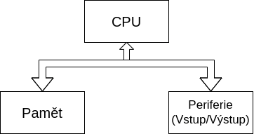
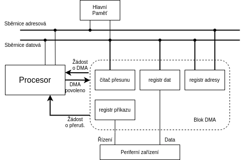

1. Architektura počítačů
Jaké jsou základní principy fungování počítače?
- Počítač je programován obsahem paměti
- Instukce se vykonávají sekvenčně
- Každý následující krok závisí na tom předchozím

- Procesor si přes sběrnici vyžádá instrukci z paměti na adrese IP
- Poté co instrukci získá ji provede
- Zvýší IP/PC
- Cyklus čtení a provedení se opakuje
Kritéria a Principy dle von Neumanna:
- Počítač je řízen obsahem paměti (struktura počítače je nezávislá na typu úlohy)
- Strojové instrukce a Data jsou v jedné paměti (lze přistupovat jednotným způsobem)
- Paměť je rozdělena do buněk stejné velikosti (Jejich pořadové číslo je jejich adresa)
- Následující krok je závislý na tom přechozím
- Program je sekvence instukcí, ty jsou vykonávány sekvenčně, v pořadí v jakém jsou zapsány do paměti
- Změna pořadí instukcí je možná pomocí skoku
- Pro reprezentaci čísel, adres, znaků.. se používá dvojková soustava

Jaké má výhody a nevýhody architektura dle von Neumanna?
- Výhody
- Rozdělení paměti pro kod a data určuje programátor
- do paměti se přistupuje stejném způsobem pro data i instukce
- jedna sběrnice => jednodušší výroba
- Nevýhody
- jedna paměť může mít při chybě za následek přepsání vlastního programu
- jediná sběrnice je úzké místo
Přinesla harvardská architektura nějaká vylepšení proti von Neumannově?
- Oddělení paměti dat a programu
- Program už nemůže přepsat sám sebe
- Paměti můžou být vyrobeny různými technologiemi
- Dvě sběrnice umožňují přistupovat k instrukcím a datům zárověň
- Nevýhody:
- dvě sběrnice jsou dražší
- nevyužitou část paměti dat nelze použít pro program.. a naopak
Jaká je podpora paralelismu u obou architektur počítačů?
- Žádná .. instrukce jsou vykonávány sekvenčně, následující krok je závislí na tom předchozím
- Paralelizmy se musí simulovat až na úrovni OS
Je lepší mít oddělené paměti pro data i program? Proč ano a proč ne?
- Ano
- Program nemůže přepsat sám sebe
- Ne
- Jedna sběrnice => jednodušší výroba
- Rozdělení pro kod a data určuje programátor
- Lze efektivněji využít kapacitu paměti
Může fungovat počítač bez paměti či bez periferií?
- NE.. jak pravil von Neumann .. je potřeba procesoru, paměti a periferii
K čemu se v počítači využívá dvojková soustava?
- Pro reprezentaci čísel, adres, znaků..
Zvyšují sběrnice výkon počítače?
- Ne přímo, ale mohou jej omezit
Je možné, aby procesor prováděl instrukce jinak, než sekvenčně?
- NE instukce se provádějí sekvenčně
Jak je v počítači organizovaná paměť?
- Je složená z za sebou jdoucích buňěk stejné velikosti (obvykle 8bit), jejich pořadové číslo se využívá jako jejich adresa
2. Jazyk symbolických instrukcí
3. Komunikace s periferiemi
Z jakých částí se skládá sběrnice a co je účelem jednotlivých částí?
- Sběrnice dělíme na Adresovou, Řícicí, Datovou
- Adresová
- Přenáší adresy
- Zdroj adresy je mikroprocesor
- Počet bitů (vodičů) sběrnice odpovídá počtu bitů adresy
- Řídicí
- Některé signály jsou generovány mikroprocesorem, některé jinými bloky
- Nejčastější řídicí signály:
- RESET
- má každý mikroprocesor
- uvede mikroprocesor do výchozího stavu
- MEMORY READ (MR)
- zabezpečuje časování čtení z paměti (nebo jiných bloků)
- MEMORY WRITE (MW)
- zabezpečuje časování zápisu do paměti (nebo jiných bloků)
- INPUT / OUTPUT READ / WRITE
- pro čtení nebo zápis do zařízení
- READY
- Datová
- Slouží pro přenos veškerých dat v počítači
- Nedůležitější parametry jsou šířka (počet bitů) a časování
- Šířka ovlivňuje rychlost komunikace
- Lze ušetřit vodiče pomocí multiplexování
Co to je adresní dekodér a kdy je potřeba jej použít?
- Když je paměťový prostor obsazen více jak jednou fyzickou pamětí nebo periferním zařízením
- Rozhoduje, které zařízení je ke komunikaci určeno
- Jeho výstupy jsou v podstatě Chip Select signály pro jednotlivé obvody
- Může být stavěn jako:
- úplné dekódování adresy
- neúplné dekódování adresy
- lineární přiřazení adresy
- univerzálním přiřazením adresy
Řízení komunikace
- 2 případy zahájení komunikace
- z iniciativy programu
- z iniciativy periferie
- počítač se může nacházet ve stavu, kdy nemůže s periferii komunikovat
- lze řešit:
- obvodově (bez vědomí počítače)
- příznakovým bitem (Programové řízení)
- přerušením .. počítač se později vrátí tam, kde byl vyrušen (Systém Přerušení)
- přímým přístupem (DMA)
Jaký je princip komunikace s periferiemi pomocí V/V bran?
- Vstupně / Výstupní brána (Input/Output, I/O) je obvod, kter zprostředkovává předávání dat mezi sběrnicí (počítače) a periferním zařízení (počítače)
- Dělíme na
- Základem je záchytný registr s 3 stavovým vstupem
Nepodmíněný vstup a výstup dat:

- Při vstupu počítač vyšle signál RD, tím přikáže vstupnímu zařízení předat data do vstupní brány počítače
- Při vstupu počítač vyšle signál WR a výstupní zařízení převezme data
- Jednoduchý způsob, předpokládá, že je perif. zařízení pořád ready
K čemu slouží u komunikace V/V bran indikátor a jaké přináší výhody?
- Zajišťujě, že informace budou správně podány (další otázka)
Popište, jak probíhá přenos dat pomocí V/V brány s indikátorem.
Podmíněný vstup a výstup dat

- Jsou-li poskytována platná data ze vstupu, pak se za pomocí STB(strobe) impulsu nastaví Q na 1
- Když je Q na 1, data jsou předány počítači pomocí impulsu RD a po přenosu je indikátor vynulován
- V opačném případě se nastavuje Q na 1, když jsou data převzata, pomocí ACK signálu
Jaký je rozdíl mezi programově řízenou komunikací s perifériemi a pomocí přerušení?
- Programové:
- Využívá instrukce pro vstup a výstup, ve spojení s instrukcemi pro testování logických proměnných a skoků
- Prostě testuje stavové bity ..
- Přerušení:
- Periferie aktivuje přerušovací signál, procesor přeruší program, přejde do obslužného režimu, poté pokračuje v provádění hl. programu tam, kde byl přerušen
Jaké výhody přináší řízení komunikace s využitím přerušení?
- Procesor pořád nemusí zbytečně testovat stavové bity => neztrácí výkon
Z jakých částí se skládá řadič DMA?

- Registr dat - Obsahuje slovo pro přesun
- Registr adresy - Adresa hl. paměti kam bude slovo zapsány, nebo odkud bude přečteno
- Čítač přesunu - požadovaný počet slov, které mají být ještě přesunuty
Jak probíhá přenos dat s použitím DMA?
- Naprogramování procesorem bloku DMA
- blok DMA spustí periferní zařízení, a čeká než zařízení bude připraveno data příjmou nebo vyslat
- Procesor dokončí strojový cyklus a pak reaguje na žádost o DMA, přímý přístup se provadí během činosti procesoru.. blok DMA a procesor se střídají v používání paměti
- Procesor vyšle vybrané jednotce ACK a uvolní sběrnici, jednotka pak pošle obsah registru adresy na addr. sběrnici a obsah registru dat na dat. sběrnici a čeká na provedení cyklu paměti.. pak obsah registru adresy zvětší o jedničku a čítač přesunu zmenší o jedničku.. pokud není nulový, testuje zda bylo předáno nové slovo do registru dat.. když ne, dočasně se ukončí přesun dat a přestane se vysílat žádost o DMA.. řízení je předáno procesoru
- Procesor dále pokračuje v provádění svého programu do doby, než obrží další žádost o DMA
- Pokud je obsah čítače přesunu nulový, blok DMA ukončí cel přesun a uvolní sběrnici
Jaké má výhody řadič DMA proti přenosu dat s využitím CPU?
- Všechno nemusí dělat procesor
I2C ???
Příklad jedné sběrnice: I2C, viz cvičení, zapojení, cyklus sběrnice, adresování, přenos dat.
4. CISC A RISC
Kdy a proč se začaly procesory dělit na RISC a CISC?
- V 70. letech, kvůli narůstající složitosti procesorů ..
Jaké byly zásadní důvody, proč se začaly procesory RISC vyvíjet?
- Výzkumy ukázaly, že programátoři a compilátory používají instrukce velmi nerovnoměrně (v 50% případů se vyskytují pouze 3 instrukce)
- Snahy o nalezení optimálního instrukčního souboru => vznik RISC
Jaké jsou základní konstrukční vlastnosti procesorů RISC?
- Malý instrukční soubor
- V každém strojovém cyklu by měla být dokončena jedna instrukce
- Zřeťezené zpracování instrukcí
- Data jsou z hlavní paměti vybírána a úkládána výhradně pomocí LOAD a STORE instrukcí
- Instrukce mají pevnou délku a jednotný formát
- Je použit vyšší počet registrů
- Složitost se přesouvá na optimalizující kompilátory
Jak přispěly jednotlivé charakteristické vlastnosti procesorů RISC ke zvýšení výpočetního výkonu?
- Jednotná délka instrukcí => rychlejší výběr instrukcí z paměti => lepší plnění fronty instrukcí
- Jednotný formát => zjednodušuje dekódování
- Zřetězené zpracování instrukcí
Jaký je princip zřetězeného zpracování instrukcí v RISC procesorech?
- Provedení instrukce musí vždy projít stejnými fázemi (né nutně těma co jsou na obrázku)
- Funguje jako "výrobní linka"
CISC:
|
T1 |
T2 |
T3 |
T4 |
T5 |
T6 |
T7 |
T8 |
T9 |
T10 |
T11 |
T12 |
| VI |
I1 |
|
|
|
|
|
I2 |
|
|
|
|
|
| DE |
|
I1 |
|
|
|
|
|
I2 |
|
|
|
|
| VA |
|
|
I1 |
|
|
|
|
|
I2 |
|
|
|
| VO |
|
|
|
I1 |
|
|
|
|
|
I2 |
|
|
| PI |
|
|
|
|
I1 |
|
|
|
|
|
I2 |
|
| UV |
|
|
|
|
|
I1 |
|
|
|
|
|
I2 |
RISC:
|
T1 |
T2 |
T3 |
T4 |
T5 |
T6 |
T7 |
T8 |
T9 |
T10 |
T11 |
T12 |
| VI |
I1 |
I2 |
I3 |
I4 |
I5 |
I6 |
I7 |
|
|
|
|
|
| DE |
|
I1 |
I2 |
I3 |
I4 |
I5 |
I6 |
I7 |
|
|
|
|
| VA |
|
|
I1 |
I2 |
I3 |
I4 |
I5 |
I6 |
I7 |
|
|
|
| VO |
|
|
|
I1 |
I2 |
I3 |
I4 |
I5 |
I6 |
I7 |
|
|
| PI |
|
|
|
|
I1 |
I2 |
I3 |
I4 |
I5 |
I6 |
I7 |
|
| UV |
|
|
|
|
|
I1 |
I2 |
I3 |
I4 |
I5 |
I6 |
I7 |
Legend:
| short name |
full name |
| VI |
Výběr Instrukce |
| DE |
Dekodování |
| VA |
Výpočet Adresy |
| VO |
Výběr Operandu |
| PI |
Provedení Instrukce |
| UV |
Uložení Výsledku |
Jakého zrychlení lze zřetězeným zpracováním instrukcí dosáhnout?
- V ideáním světě, při délce zřetězení 6-ti instrukcí, udělá během 12 cyklů
- CISC: 2 instrukce
- RISC: 7 instrukcí
- viz. tabulky v minulé otázce
Jaké problémy přináší zřetězené zpracování instrukcí v procesorech RISC?
- Datové a strukturální hazardy
- Datové: Když instrukce potřebuje mít k dispozici data předchozí instrukce ( a ta ještě nejsou k dispozici)
- Struktrální: Problém omezených prostředků procesoru (a počítače jako celku) .. např. jen jedna sběrnice
- Problémy plněním fronty instrukcí
- Podmíněné skoky
- Nepodmíněné skoky na adresu, která se musí vypočítat
Co to je predikce skoků, proč se používá a jaké způsoby predikce se využívají?
Co to jsou datové a strukturální hazardy v RISC procesorech? Co je způsobuje?
Jak funguje dvoubitová dynamická predikce skoků a proč se využívá?
5. x86 Intel historie
6. Paměti
Dle jakých kritérií či vlastností se dělí paměti počítačů?
Jaká je vnitřní organizace dynamických pamětí?
Popište stručně historii vývoje dynamických pamětí.
Jak je organizována vnitřně statická paměť?
Jaké typy pamětí si udržují svůj obsah i po odpojení napájení?
Paměti s trvalým obsahem umožňují svůj obsah přepsat. Jak se přepis u jednotlivých typů provádí?
Jaké speciální typy pamětí se používají?
Jak se u pamětí detekují a opravují chyby?
7. Monolitické počítače
Jaká je obvyklá organizace pamětí v mikropočítačích?
Jaké zdroje hodinového signálu se mikropočítačích používají?
Jak probíhá RESET mikropočítače?
Jakými způsoby se řeší ochrana proti rušení v mikropočítačích?
Jaké jsou základní vlastnosti V/V bran?
Popište obecný princip fungování sériových rozhraní? Jaká sériová rozhraní znáte?
K čemu slouží v mikropočítačích čítače a časovače? Jak fungují?
Popište konstrukci a fungování základních A/D převodníků.
Popište konstrukci a fungování základních D/A převodníků.
Jaké speciální periferie mikropočítačů znáte?
8. Monitory
Co to znamená u monitoru „šířka pásma“ a o čem vypovídá?
Na jakých principech fungují CRT monitory?
Na jakých principech fungují LCD monitory?
Jaké jsou základní výhody a nevýhody LCD monitorů?
Jak fungují OLED zobrazovací jednotky?
Jaké jsou výhody a nevýhody OLED technologie?
Jak funguje zobrazovací jednotka s technologií E-Ink?
Jaké jsou výhody a nevýhody E-Ink?
Jak je u E-Ink řešena podpora více barevných úrovní?
Co je princip multiplexu na zobrazovacích zařízeních? ???
9. Disky
10. CUDA
11. Mikropočítač a RISC CPU